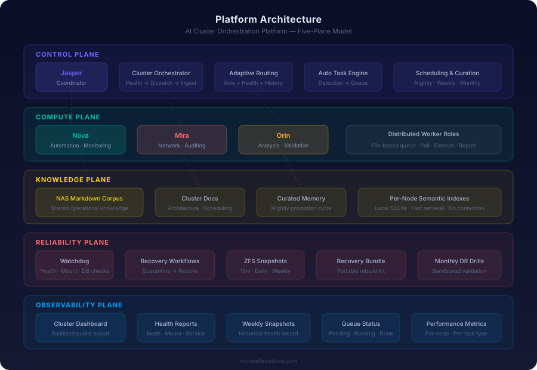

Platform Architecture
AI Cluster Orchestration Platform
An AI-assisted orchestration platform built to automate infrastructure tasks, coordinate distributed worker nodes, and maintain a shared operational knowledge system across a 4-node homelab cluster.
The platform is designed around five architectural planes — control, compute, knowledge, reliability, and observability — each with clear responsibilities and well-defined interfaces. Every subsystem is built for independent operation: nodes can function when the coordinator is unavailable, shared knowledge survives individual node failures, and the entire orchestrator can be rebuilt from a portable recovery bundle.
Platform Architecture
The system is organized into five planes, each responsible for a distinct operational concern. This layered model keeps responsibilities clear and allows each plane to evolve independently.

Control Plane
Coordinates routing decisions, job dispatch, autonomous task generation, and scheduled maintenance across the cluster.
Compute Plane
Distributed worker nodes poll for assigned tasks, execute them within their role specialization, and report results back to shared storage.
Knowledge Plane
Shared Markdown corpus on NAS-backed storage provides durable operational knowledge. Each node maintains a local semantic index for fast retrieval.
Reliability Plane
Protects system integrity through automated watchdogs, recovery workflows, snapshot-backed storage, portable recovery bundles, and recurring DR validation.
Observability Plane
Surfaces cluster health, queue state, node performance metrics, and weekly operational snapshots through dashboards and structured reports.
Design Principle
Each plane operates independently. The compute plane functions when the coordinator is offline. Knowledge survives node failures. The system can be rebuilt from the recovery bundle alone.
Node Topology
Click any node to explore its role, hardware, and services.
Distributed Orchestration
The orchestrator runs a continuous four-phase loop: check node health, dispatch queued jobs to the best available node, ingest completed results, and update cluster status. This cycle repeats on a fixed schedule, keeping the system responsive without requiring persistent connections between nodes.
Adaptive Routing
Each task is scored against candidate nodes using a blend of static role fitness, historical success rate, average execution time, and recency of last assignment. The routing model improves automatically as execution data accumulates — nodes that consistently complete certain task types faster and more reliably receive higher scores.
Durable Job Queue
Jobs are represented as individual JSON files on shared storage, moving through pending, running, done, and failed directories. This file-based approach eliminates shared database dependencies, prevents lock contention across nodes, and provides natural crash recovery — incomplete jobs are detected by stale-job timeout and returned to the queue.
Shared Knowledge Architecture
The cluster maintains a shared operational knowledge system designed around two principles: durable knowledge belongs in plain text on shared storage, and fast retrieval uses local indexes that can be rebuilt from the source at any time.
Markdown Corpus
A NAS-backed Markdown corpus serves as the cluster's durable memory. Each node contributes daily observations. The coordinator is the primary curator, maintaining long-term knowledge documents and cluster-wide context.
Local Semantic Indexes
Each node maintains its own local SQLite search index for fast retrieval. Shared knowledge stays in text files on network storage — never as shared databases — eliminating corruption risk and lock contention.
Nightly Curation
An automated curation process reviews daily notes, classifies content by type, promotes durable facts to curated documents, and archives old notes by week. Knowledge is refined, not accumulated.
Reliability & Recovery
The reliability plane implements defense in depth: multiple independent systems protect against different failure modes, from transient service disruptions to complete coordinator loss.
Self-Healing Watchdog
A runtime watchdog checks service health, mount integrity, and database consistency on a recurring schedule. When degradation is detected, automated recovery workflows quarantine bad state and restore from verified backups.
Recovery Bundle
The entire orchestration system — routing policy, worker configuration, queue structure, scheduling, and architecture documentation — is packaged into a portable recovery bundle on shared storage, ready for rapid rebuilds.
Monthly DR Drills
Automated disaster recovery drills run monthly in a sandboxed environment. Each drill validates the recovery bundle, confirms components would restore correctly, verifies the live system was not modified, then cleans up.
ZFS Snapshots
Storage is backed by ZFS with automated snapshot policies at three tiers: frequent snapshots retained for hours, daily snapshots retained for weeks, and weekly snapshots retained for months.
Conservative Safety Model
All automated actions follow a conservative policy: prefer quarantine over deletion, require preflight checks before service restart, never auto-execute destructive changes, and gate risky operations behind human approval.
Weekly Snapshots
Comprehensive weekly reports capture node health, mount status, queue state, archive growth, and curation metrics — providing a historical record of cluster operational health over time.
Automation & Self-Healing
The platform generates its own maintenance work. Rather than relying on manual intervention to detect and remediate issues, the orchestrator continuously monitors cluster health signals and creates appropriate tasks when action is needed.
Autonomous Task Generation
A rule engine evaluates cluster health signals — node availability, mount integrity, queue health, and performance trends — against a set of detection rules. When a rule triggers, it creates a task with appropriate classification: safe operations go directly to the queue, risky actions are placed in an approval queue for human review, and advisory-only detections are logged without creating tasks.
Approval Gates
Tasks classified as potentially destructive or high-impact are routed to a separate approval queue rather than executing automatically. This creates a clear boundary between what the system can do safely on its own and what requires human judgment. Cooldown tracking prevents duplicate task creation when the same condition is detected repeatedly.
What This Demonstrates
This platform is a working demonstration of the engineering practices and design thinking I bring to infrastructure work.
Systems Thinking
The cluster is designed as a cohesive system — not a collection of scripts. Routing, health, memory, curation, recovery, and orchestration all interact through well-defined interfaces on shared storage.
Reliability Engineering
Multiple layers of defense protect against data loss and service degradation: preflight guards, runtime watchdogs, automated recovery, snapshot-backed storage, and recurring DR validation.
Infrastructure Automation
Every recurring operation is automated and scheduled. Manual intervention is reserved for approval decisions and architecture changes — not for keeping the lights on.
Distributed Systems Design
Shared-nothing memory architecture, file-based coordination, health-aware dispatch, and graceful degradation — built for the real failure modes of multi-node infrastructure.
Operational Documentation
Every subsystem has architecture documentation, scheduling references, and clear rollback procedures. Operational knowledge is curated automatically, not left in chat logs or memory.
Recovery-First Design
The system is designed to be rebuilt, not just maintained. Portable recovery bundles, validated DR drills, and conservative safety policies ensure resilience isn't just a feature — it's the foundation.
Infrastructure Details
Local AI Inference
RTX 4090 running multiple large language models via Ollama — no cloud API dependencies for core inference workloads.
Proxmox Cluster
3-node Proxmox cluster for VM management. Centralized storage via TrueNAS with ZFS. Network segmentation via OPNsense.
Security Posture
OPNsense firewall, VLAN segmentation, SSH key-only authentication, CI-enforced secret scanning, and credential hygiene policies.
Engineering Outcomes
Beyond the technical implementation, this platform solves real engineering problems — reducing operational friction, improving system resilience, and creating a foundation that can be extended without fragility.
Reliable Automation at Scale
Distributed orchestration with adaptive routing removes the operator from the dispatch loop. Tasks are assigned to the best available node based on role fitness, health status, and observed success rates. As execution history builds, routing decisions improve without manual tuning — reducing operational overhead while increasing reliability.
Recovery-First Infrastructure
The system is designed to survive its own failures. Runtime watchdogs detect degradation and restore from verified backups without operator intervention. A portable recovery bundle means the entire orchestrator can be rebuilt on clean infrastructure. Monthly DR drills validate this capability in a sandboxed environment — recovery is tested, not assumed.
Shared Operational Knowledge
Operational knowledge is captured in a shared Markdown corpus on ZFS-backed storage, accessible to all nodes. Each node maintains a local semantic index for fast retrieval without shared database dependencies. Nightly curation promotes durable facts and archives noise — the knowledge base improves over time rather than growing unbounded.
Safe Autonomous Operations
The platform generates its own maintenance work by evaluating cluster health signals against a rule engine. Safe operations execute without intervention. Risky or potentially destructive actions are routed to an approval queue for human review. Cooldown tracking prevents duplicate task creation — the system self-regulates without task storms.
Continuous System Validation
Weekly operational snapshots capture node health, queue state, archive growth, and curation metrics across the cluster — creating a historical record that surfaces trends before they become incidents. Monthly disaster recovery drills validate the recovery bundle end-to-end in a sandboxed environment, confirming the live system can be rebuilt from backup without touching production state. Together, these create a validation loop: the system doesn't just run — it continuously proves it can recover.
All infrastructure code, automation, and documentation are open source.